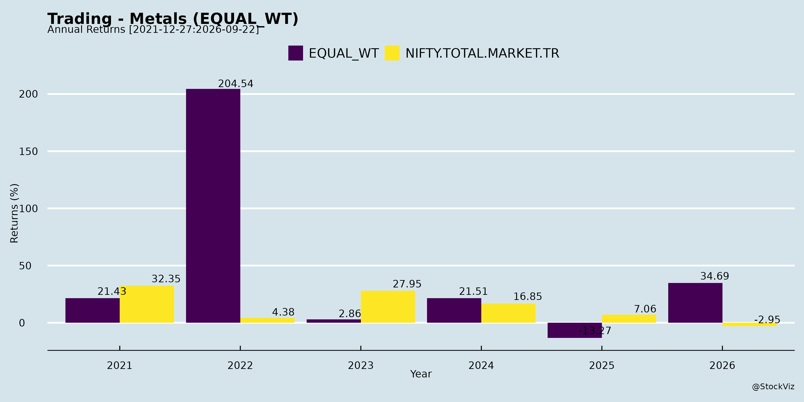
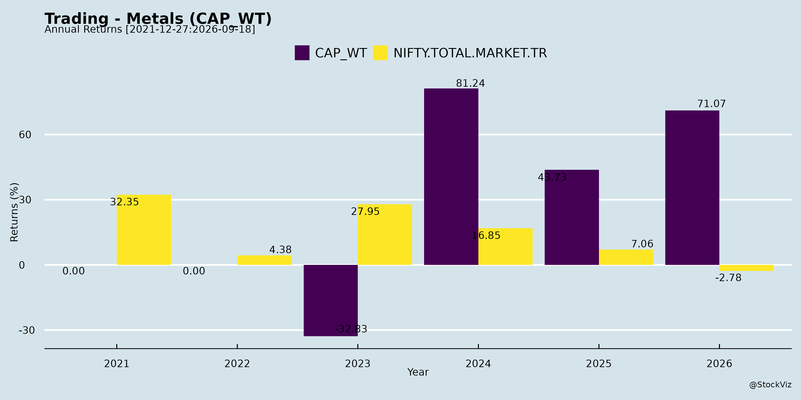
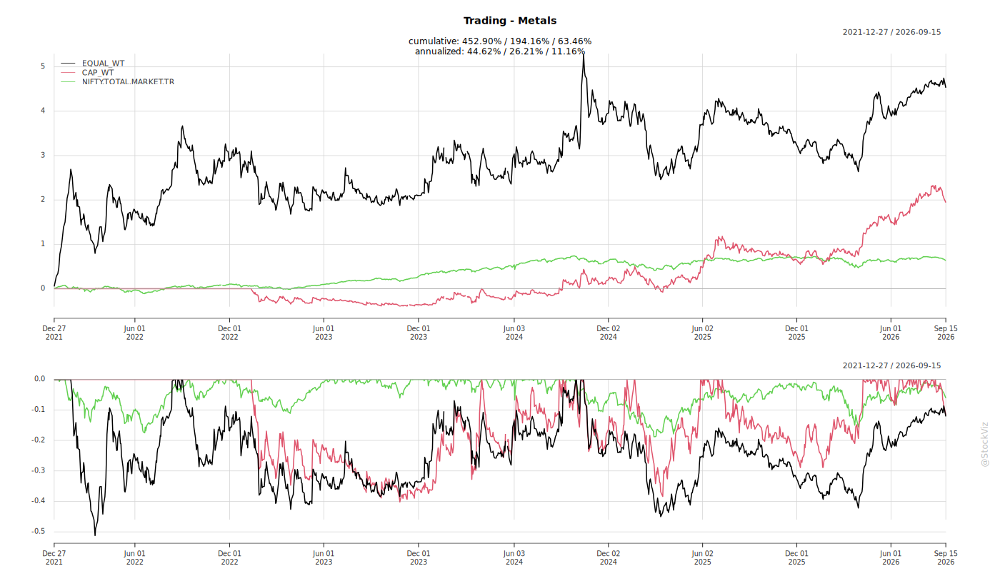
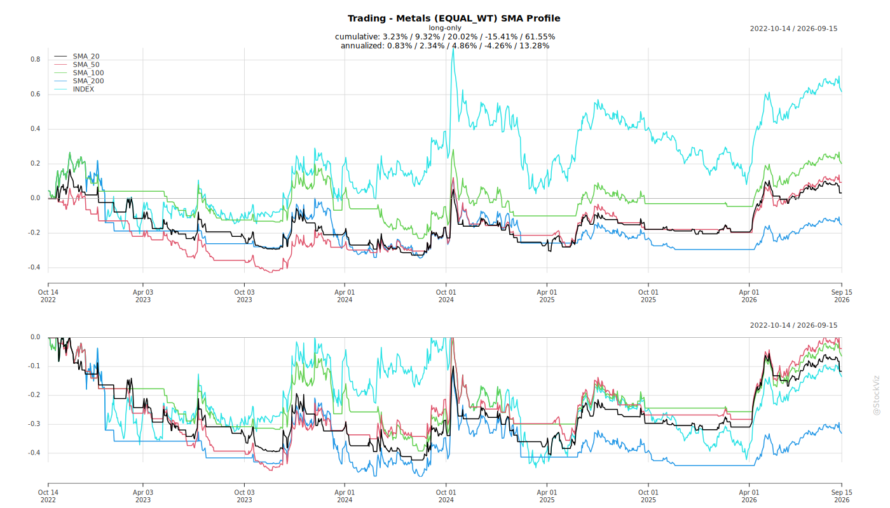
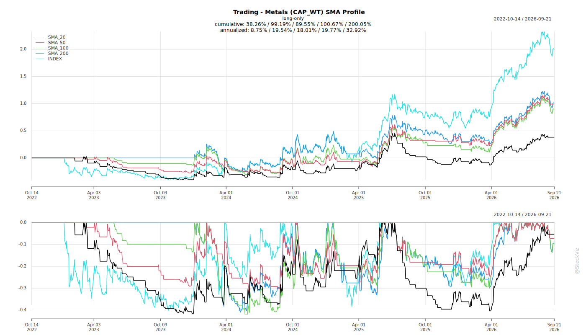

Trading - Metals
Industry Metrics
November 28, 2025
Annual Returns




Cumulative Returns and Drawdowns

SMA Scenarios


Current Distance from SMA
Rolling Returns


Market Cap
EBIT (% of Industry Total)
Revenue (% of Industry Total)
AI Summaries
Analyst
asof: 2025-11-27
Summary Analysis: SG Mart Limited (Indian Metals Trading Sector Focus)
Headwinds
- Macro slowdown & demand weakness: Heavy monsoons disrupted construction/infra (key steel demand driver), alongside weak auto/white goods demand, leading to stalled activity and low restocking.
- Steel price volatility: Sharp Q2 decline (INR3,000-3,500/ton, ~5-6%) caused inventory losses (~50-60 bps EBITDA hit); continued into Oct, with Q3 expected similar to Q2.
- Margin pressures: One-offs like full branding expense booking (2.5-3x prior levels) and upfront profiling/opex depressed EBITDA to 1.6% (vs. 2-2.5% normalized); FY26 INR200 Cr EBITDA target missed.
- H1 performance lag: Flat YoY revenue; B2B shift to service centers reduced low-margin trading volumes temporarily.
Tailwinds
- Improving steel supply: More blast furnaces operational, enabling 50% QoQ B2B growth; positions SG Mart as key intermediary in organized shift from unorganized traders.
- Service center scale-up: 7 operational (5 owned), 50% of Q2 revenue; throughput exceeding targets (up to 12k tons/month vs. 5k expected), insulating from volatility via value-add processing (INR1,500-2k/ton EBITDA).
- Diversification ramp: Renewables (4% revenue, INR260 Cr order book → double Q3 contribution); distribution (16-17%, stabilizing with new products like TMT/mesh); no major new capex via asset sweating.
- Strong balance sheet: INR1,000 Cr cash for WC/capex (INR200 Cr/year); low WC days (22, targeting 15-25); H1 EBITDA +61% YoY despite macros.
Growth Prospects
- H2 FY26/Q4 exit run-rate: Normalized EBITDA >2% (service centers/renewables driving; volumes ~0.5M tons H1 → higher H2 via 8th center in Jaipur).
- FY27+ scaling: 4-6 new service centers YoY (pan-India: Rajasthan, East/South); renewables expansion (10-15 products, 30k+ ton order execution); B2B/distribution +15-20% volume growth on supply tailwind.
- Long-term vision: Emulate global steel traders (Mitsui/Itochu); ROCE 20-25%; EBITDA trajectory post-FY26 to match capex/guidance (cumulative FY26-28). Sector tailwinds: Domestic capacity +10%, import tariffs favor in-house consumption.
Key Risks
- Price/demand volatility: Sharp drops (>INR2k/ton quick) amplify inventory hits (27-day service center inventory exposed); delayed demand recovery could slip Q4 normalization.
- Execution delays: New center/order ramp-up (e.g., Jaipur Q4); renewables/distribution stabilization; capex overruns amid cash deployment.
- Guidance credibility: Repeated misses (Q3~Q2, FY26 <INR200 Cr) may pressure sentiment; higher WC in profiling/international trading.
- Competition/macro: Unorganized capture hinges on supply; export shifts/global uncertainty if domestic demand lags.
Overall Outlook: SG Mart demonstrates resilience (QoQ +50% revenue, H1 profit +38-61%) via diversification beyond volatile B2B trading. Q4 inflection probable on stable prices/supply, but volatility caps near-term upside. Long-term structural (service centers/network) positions it for 20-25% ROCE in India’s steel value chain. Monitor Q3 results for execution.
Financial
asof: 2025-11-27
Summary Analysis: Indian Metals Trading Sector (Focus: Steel, Scrap & Trading)
The provided filings from Ashoka Metcast Ltd (steel & goods trading), Lloyds Enterprises Ltd (metals/enterprises with compliance clarifications), and Nupur Recyclers Ltd (ferrous/non-ferrous scrap import/processing) offer insights into small-cap players in India’s metals trading ecosystem. The sector benefits from infrastructure demand but faces commodity volatility. Key metrics (9M FY25 consolidated where available): Ashoka (~Rs 3,247 Cr revenue, Rs 680 Cr PAT), Nupur (~Rs 1,211 Cr revenue, Rs 140 Cr PAT). Lloyds lacks detailed financials but highlights governance issues.
Tailwinds (Positive Drivers)
- Infrastructure Boom: Strong steel/TMT demand via govt capex (e.g., Ashoka’s consolidated steel trading revenue up to Rs 1,433 Cr in Q2; Nupur’s scrap processing aligns with recycling mandates).
- Subsidiary Leverage: Ashoka’s growth via Rhetan TMT (steel ops: Rs 3,067 Cr 9M revenue); Nupur’s subs contribute ~70% revenue/profit.
- Other Income Boost: High non-op income (Ashoka: Rs 277 Cr 9M; Nupur: Rs 75 Cr) from investments/treasury, cushioning trading volatility.
- Fund Infusion: Nupur raised Rs 184 Cr (25% warrants) for working capital/capex/subs infusion, signaling expansion.
- Sustainability Shift: Scrap recycling tailwind (Nupur’s PAN-India ops); Ind AS adoption smooth in filings.
Headwinds (Challenges)
- Revenue Volatility: QoQ declines (Ashoka cons. Q3: Rs 688 Cr vs Q2 Rs 1,433 Cr; Nupur Q3: Rs 343 Cr vs Q2 Rs 512 Cr) due to seasonal/trading slowdowns.
- Margin Pressure: High expenses (Ashoka: inventory changes nil standalone; Nupur: material costs ~50% of revenue); finance costs elevated (Nupur: Rs 14 Cr 9M).
- Compliance/Governance Lapses: Lloyds’ deficiencies (unauthorized signing, unreviewed subs/associates); Nupur auditor flags unreviewed subs (Rs 107 Cr assets, Rs 34 Cr revenue).
- Standalone Weakness: Ashoka standalone revenue low (Rs 180 Cr 9M, mostly “trading goods”); over-reliance on subs.
- Tax/Regulatory Scrutiny: Ad-hoc tax provisions (Nupur: Rs 22 Cr prior years); SEBI LODR circular compliance emphasized.
Growth Prospects
- High: 9M PAT growth (Ashoka: 5x YoY cons.; Nupur: 2x YoY). Steel trading segment dominant (Ashoka: Rs 3,067 Cr; Nupur scrap processing scalable).
- Expansion Avenues: Capex/working capital via fundraising (Nupur: Rs 200 Cr subs, Rs 150 Cr capex); multi-segment (Ashoka: steel + goods).
- Market Tailwinds: Projected 8-10% steel demand CAGR (infra/exports); recycling policy push could double Nupur-like players.
- EPS Momentum: Ashoka cons. Rs 2.72 (9M); Nupur Rs 1.81—attractive for small-caps.
- Outlook: FY25 full-year PAT could exceed FY24 (Ashoka: Rs 479 Cr; Nupur: Rs 86 Cr) if metal prices stabilize.
Key Risks
- Commodity Price Swings: 80-90% revenue tied to steel/scrap prices; inventory fluctuations (Nupur: -Rs 175 Cr 9M change).
- Subsidiary Dependence: Unreviewed/unaudited subs (Nupur: 3 subs management-certified; Lloyds associate issues) risk material misstatements.
- Liquidity/Debt: Rising finance costs (Ashoka cons.: Rs 119 Cr 9M); no defaults but capex needs funding.
- Regulatory/Execution: Filing delays/qualifiers (Lloyds resolution needed); Ind AS transition risks.
- Concentration: Single-segment reliance (Nupur: scrap; Ashoka: steel); low standalone scale vulnerable to group issues.
- Macro: Import duties, global metal glut, or infra slowdown could hit 20-30% revenues.
Overall Sector Verdict: Bullish with Caution. Tailwinds from infra/recycling outweigh headwinds, but risks demand strong governance/price hedges. Monitor Q4 for sustained growth; potential 20-30% upside if steel demand holds.
General
asof: 2025-11-27
Analysis: Indian Trading - Metals Sector
Context: The provided documents highlight listed entities (e.g., Ashoka Metcast, BMW Ventures, Lloyds Enterprises, Nupur Recyclers) engaged in metals trading (steel, iron ore pellets), engineering fabrication, mining (iron ore, gold), recycling, and related investments. Lloyds Enterprises provides the most detailed insights into trading, metals value chain, and group synergies. Analysis draws from H1FY26 results, investor presentations, and disclosures as of Sep-Nov 2025.
Tailwinds (Positive Drivers)
- Robust Financial Momentum: Standalone income +36% YoY (₹359→₹490 Cr), consolidated +44% YoY; PAT surges (standalone +1634% to ₹251 Cr, consolidated +441% to ₹311 Cr) driven by trading stability and portfolio monetization.
- Subsidiary Strength: Lloyds Engineering Works (LEWL, 33% stake) reports record FY25 revenue/PAT, H1FY26 order book ~₹1,500 Cr (steel/power/defence); Lloyds Metals & Energy (LMEL) benefits from low-cost iron ore mining (26Mnt EC), pellet/DRI expansions, and slurry pipeline.
- Strategic Investments: 31.58% stake in Geomysore (₹140 Cr) for India’s first private gold mine (Jonnagiri: 1,000 kg/year peak, 15-year life, EC to 2043); real estate pivot via Lloyds Realty (270+ acres MoUs, ₹5,000 Cr+ potential).
- Sector Enablers: Domestic steel demand, import substitution (gold/ore), logistics efficiencies (pipelines/proximity to ports), debt-free models.
Headwinds (Challenges)
- Commodity Volatility: Steel/allied products trading exposed to price cycles; iron ore/gold fluctuations could pressure margins (implicit in diversified portfolio emphasis).
- Execution Delays: Gold mine pre-commercial (commissioning this quarter), real estate MoUs non-binding (9-24 month timelines), LEWL capacity doubling underway but capex-intensive.
- Macro Pressures: High base effects from FY25 records; trading stable but not hyper-growth; limited visibility on BMW Ventures/Nupur Recyclers’ metals-specific results (garbled data suggests modest scale).
- Regulatory/Operational: Mining EC reliance (e.g., Jonnagiri fully permitted but upside-dependent on 42.5t resource exploration).
Growth Prospects
- High-Upside Assets: Gold production ramp-up (1,000 tpd plant, Q2FY26 start); LMEL pellet/pipeline scale-up for low-cost exports; LEWL EPC pivot (drone/tech tie-ups, ₹11,500 Cr+ order potential).
- Diversification: Real estate warehousing/residential (Taloja/Khopoli, MMR focus) adds non-cyclical revenue; steel trading expansion into raw materials.
- Group Synergies: LEL as holding co. unlocks value from LEWL/LRDL/LMEL; warrants/FII interest (public shareholding 36.6%) supports liquidity (1-yr avg vol 3Mn shares).
- Outlook: 2x capacity/throughput targets; ₹5,000 Cr+ realty pipeline; long-term gold/ore flywheel positions for 20-30%+ CAGR in metals-linked revenue.
Key Risks
- Cyclical/Market: Commodity downturns (steel/gold prices), demand slowdown (infrastructure capex delays).
- Execution/Operational: Project delays (mining commissioning, land aggregation), integration risks in acquisitions (e.g., LEWL’s Techno/MetalFab).
- Financial/Leverage: Portfolio monetization-dependent PAT; capex for expansions despite debt-free status.
- Regulatory/Geopolitical: Mining approvals, environmental clearances, JV dependencies; forex/import duty changes.
- Liquidity/Valuation: Low FII/DII (0.7% combined), 52-wk volatility (₹34-88); disclaimer notes forward-looking uncertainties.
Summary Verdict: Strong tailwinds from group execution and diversification outweigh headwinds, with metals trading as stable base and mining/realty as growth engines. Prospects bright (gold/LEWL catalysts imminent), but monitor commodity cycles and Q3FY26 results for sustained momentum. Sector peers like Ashoka/BMW/Nupur lag in disclosure depth but align with trading resilience.
Investor
asof: 2025-11-27
SG Mart Limited: Analysis in Indian Trading - Metals Sector (Based on Q2 FY26 Earnings Call)
Headwinds
- Steel Price Volatility: Sharp Q2 decline (~INR 3,000/ton or 5-6%) led to inventory losses (50-60 bps of revenue impact), eroding EBITDA margins to 1.6% vs. targeted 2-2.5%. Ongoing October dip adds Q3 pressure; rapid drops amplify hits despite low inventory (22-27 days).
- Macro Slowdown: Heavy monsoons, weak demand from construction/infra (key steel driver), autos, and white goods stalled activity. Global trade uncertainty heightened volatility.
- One-Off Costs: Pre-booking of 24-month branding/ad expenses (2.5-3x prior levels) and upfront opex for renewables/profiling (~50 bps impact) depressed H1 EBITDA (INR 64 Cr vs. FY26 target INR 200 Cr).
- Business Mix Shifts: B2B trading (low-margin) down as focus shifts to higher-margin service centers; higher WC in renewables/international trading (30-40 days initially).
Tailwinds
- Improving Steel Supply: More blast furnaces operationalizing → adequate domestic availability supports volumes (Q2 B2B +50% QoQ; combined B2B+service centers at record levels). Enables market share from unorganized traders.
- High-Margin Verticals Scaling: Service centers (50% revenue, INR 1,500-2,000/ton EBITDA) at 7 sites with 35% QoQ volume growth and superior throughput (10k-12k tons/month/site). Renewables (INR 2,000-3,000/ton) insulate from volatility via semi-processing.
- Strong Balance Sheet: ~INR 1,000 Cr cash buffers capex (INR 200 Cr/year) and WC; ROCE target 20-25% intact. H1 EBITDA +61% YoY, PAT +38% despite misses.
- Organized Shift & Network: Capturing unorganized market share; distribution stabilization (16-17% revenue) via product additions (TMT, mesh, etc.) and royalty model (no capex).
Growth Prospects
- Revenue Expansion: Q2 at INR 1,700 Cr (+50% QoQ); FY26 volumes > H1 (service centers ~10k tons/month/site; renewables order book INR 260 Cr → double Q3 contribution). FY27: 4-6 new service centers/year (target dozens pan-India, e.g., Jaipur Q4 FY26, East/South India next); renewables product diversification (10-15 items like cable trays via existing assets).
- Margin Normalization: Q4 exit run-rate reflects true potential (EBITDA/ton: B2B INR 500-1,000; service INR 1,500-2,000; renewables INR 2,000-3,000; dist. INR 1,000-1,500). Long-term FY26-28 EBITDA growth funds capex linearly; aim global steel trader scale (Mitsui/Itochu-like).
- Volume Outlook: FY26 >1 Mn tons (B2B+service); FY27 +15-20% with steel supply. Infinite B2B upside if supply sustains; renewables execution +30k tons backlog.
- Strategic Assets: No major capex for renewables (sweat service centers); TMT royalty (INR 15 Mn Q2) pure-play; pan-India presence for freight savings/market share.
Key Risks
- Volatility Sensitivity: Low WC mitigates but sharp/short-term price drops (e.g., INR 3k/ton in 30 days) cause outsized quarterly hits; full-year dilutes but erodes confidence.
- Guidance Revisions: FY26 INR 200 Cr EBITDA “difficult” (Q3 ~Q2); history of misses (e.g., service center adds: 5→3 owned +2 leased) due to unplanned costs/supply issues.
- Demand Recovery: Infra/construction/auto revival critical; export barriers/tariffs limit steel diversion, but prolonged weakness caps volumes.
- Execution/Capex: Scaling service centers/renewables (higher WC initially); land delays, throughput ramp risks. Cash drawdown if EBITDA lags.
- Competition/Scale: Unorganized dominance; need sustained steel supply to displace. B2B “infinite” but low-margin (INR 500/ton).
Overall Summary: SG Mart shows resilience (H1 growth >50% YoY metrics) amid metals headwinds, pivoting to stable, high-margin verticals (service centers/renewables →70% revenue potential). Q4 FY26 inflection likely with plateauing prices and cost normalization, but repeated guidance slips and volatility pose credibility risks. Long-term prospects strong (20-25% ROCE, pan-India network) if macro demand rebounds and execution delivers. Sector tailwind: Rising steel capacity favors organized traders like SG Mart.
Press Release
asof: 2025-11-27
Indian Trading - Metals Sector Analysis
Based on Q2 FY26 (Sep 2025) Press Releases from BMW Ventures Ltd (steel distribution/fabrication) and Nupur Recyclers Ltd (metal scrap recycling/processing).
Tailwinds (Positive Factors)
- Infrastructure Boom & Govt Support: Strong demand from east India’s rapid infra expansion (e.g., railways, highways), boosted by govt investments. BMW highlights Bihar’s steel consumption growth; Nupur aligns with “Make in India” and circular economy initiatives.
- Diversification into Value-Added Products: BMW’s PEB order book up 251% YoY (499 MT to 1,749 MT as of Oct 2025) and RDSO-approved steel girders; Nupur’s expansions (4.5-acre Haryana plant, 51% stake in auto components firm Tycod Autotech, Nupur Extrusion for solar/OEM supply).
- Resilient Profitability: BMW net profit +12.5% YoY (₹7.11 Cr); Nupur PAT +7.13% QoQ (₹4.33 Cr). Efficient supply chains, dealer networks (BMW: 1,299 dealers), and operational discipline sustain margins amid challenges.
- Order Book & Capacity Expansion: BMW’s robust MT-based order book signals execution visibility; Nupur’s new facilities (27,800+ MT capacity for BMW group) enhance vertical integration.
Headwinds (Challenges)
- Soft Steel/Metal Prices: Fluctuating commodity trends pressured BMW’s EBITDA (-0.84% YoY, margin down 28 bps to 3.98%); Nupur saw marginal total income decline QoQ due to expansion capex.
- Margin Pressure: EBITDA margins compressed (BMW: 4.26% → 3.98%); investments in land/acquisitions temporarily weigh on near-term turnover/profitability.
- Sector-Wide Volatility: Dependency on cyclical steel demand and imports exposes both to global pricing/soft demand.
Growth Prospects
- Robust Outlook: BMW targets 25-30% YoY bottom-line growth in H2 FY26 via PEBs/girders/infra; Nupur eyes sustainable returns from recycling diversification (auto/solar OEMs) and reduced supplier dependency.
- Strategic Expansions: BMW scaling manufacturing (PVC pipes, roll forming); Nupur advancing into ferrous/non-ferrous processing, subsidiaries, and employment-generating units in high-growth areas (Haryana).
- Sector Tailwinds: Rising metal recycling demand, infra capex, and Bihar/East India focus could drive 15-20%+ revenue CAGR for peers, with value-added shifts improving margins to 4-5%.
Key Risks
- Commodity Price Volatility: Steel price swings could erode margins further (disclaimer in both releases).
- Execution & Capex Risks: Delays in new plants/subsidiaries (Nupur’s Haryana units); BMW’s deleveraging amid infra delays.
- Macro/Regulatory: Economic slowdowns, policy changes (taxes, imports), or geopolitical factors impacting scrap/steel supply.
- Competition & Dependency: Regional focus (Bihar for BMW) vulnerable to national players; reliance on govt infra spending.
Summary: Sector shows resilience with profit growth and diversification amid pricing headwinds. Tailwinds from infra/recycling policies outweigh near-term softness, positioning BMW/Nupur for 20-30% earnings upside in H2 FY26 if executions succeed. Monitor steel prices and capex ROIs. Overall Sentiment: Positive with Caution.
Copyright © 2023 SAS Data Analytics Pvt. Ltd. All rights reserved.